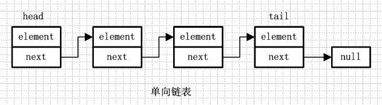
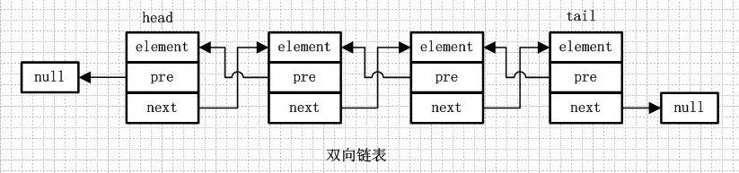
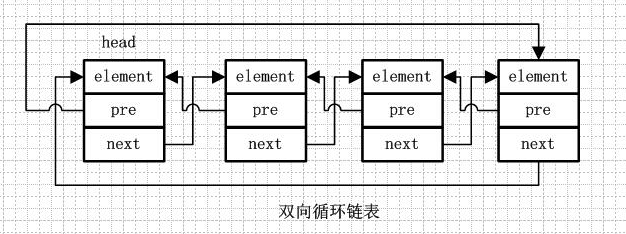
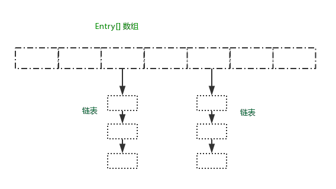

# 概述
文章的内容基于 JDK1.7 进行分析，之所以选用这个版本，是因为 1.8 的有些类做了改动，增加了阅读的难度，虽然是 1.7，但是对于 1.8 做了重大改动的内容，文章也会进行说明。
HashMap 基于 Map 接口实现，元素以键值对的方式存储，并且允许使用 null 建和 null 值， 因为 key 不允许重复，因此只能有一个键为 null, 另外 HashMap 不能保证放入元素的顺序，它是无序的，和放入的顺序并不能相同。HashMap 是线程不安全的。
# 继承关系
public class HashMap<K,V>extends AbstractMap<K,V> | |
implements Map<K,V>, Cloneable, Serializable |
# 实现接口
Serializable, Cloneable, Map<K,V> |
# 基本属性
static final int DEFAULT_INITIAL_CAPACITY = 1 << 4; // 默认初始化大小 16 | |
static final float DEFAULT_LOAD_FACTOR = 0.75f; // 负载因子 0.75 | |
static final Entry<?,?>[] EMPTY_TABLE = {}; // 初始化的默认数组 | |
transient int size; //HashMap 中元素的数量 | |
int threshold; // 判断是否需要调整 HashMap 的容量 |
# HashMap 数据结构
- 什么是链表
链表是由一系列非连续的节点组成的存储结构，简单分下类的话，链表又分为单向链表和双向链表，而单向 / 双向链表又可以分为循环链表和非循环链表，下面简单就这四种链表进行图解说明。 - 单向链表
单向链表就是通过每个结点的指针指向下一个结点从而链接起来的结构，最后一个节点的 next 指向 null
 - 单向循环链表
单向循环链表和单向列表的不同是，最后一个节点的 next 不是指向 null，而是指向 head 节点，形成一个 “环”
- 双向链表
从名字就可以看出，双向链表是包含两个指针的，pre 指向前一个节点，next 指向后一个节点，但是第一个节点 head 的 pre 指向 null，最后一个节点的 tail 指向 null
 - 双向循环链表
双向循环链表和双向链表的不同在于，第一个节点的 pre 指向最后一个节点，最后一个节点的 next 指向第一个节点，也形成一个 “环”。而 LinkedList 就是基于双向 > 循环链表设计的


在进行源码解析之前，先从总体上对 HashMap 的数据存储结构进行一个大体上的说明。

存储结构如上图所示。
HashMap 采用 Entry 数组来存储 key-value 对，每一个键值对组成了一个 Entry 实体，Entry 类实际上是一个单向的链表结构，它具有 Next 指针，可以连接下一个 Entry 实体，依次来解决 Hash 冲突的问题，因为 HashMap 是按照 Key 的 hash 值来计算 Entry 在 HashMap 中存储的位置的，如果 hash 值相同，而 key 内容不相等，那么就用链表来解决这种 hash 冲突。
# 源码解析
public class HashMap<K,V> extends AbstractMap<K,V> | |
implements Map<K,V>, Cloneable, Serializable { | |
// 默认初始化的容量 | |
static final int DEFAULT_INITIAL_CAPACITY = 1 << 4; // aka 16 | |
// 最大的容量 | |
static final int MAXIMUM_CAPACITY = 1 << 30; | |
// 负载因子，当容量达到 75% 时就进行扩容操作 | |
static final float DEFAULT_LOAD_FACTOR = 0.75f; | |
// 当数组还没有进行扩容操作的时候，共享的一个空表对象 | |
static final Entry<?,?>[] EMPTY_TABLE = {}; | |
//table, 进行扩容操作，长度必须 2 的 n 次方 | |
transient Entry<K,V>[] table = (Entry<K,V>[]) EMPTY_TABLE; | |
//Map 中包含的元素数量 | |
transient int size; | |
// 阈值，用于判断是否需要扩容（threshold = 容量 * 负载因子） | |
int threshold; | |
// 加载因子实际的大小 | |
final float loadFactor; | |
//HashMap 改变的次数 | |
transient int modCount; | |
static final int ALTERNATIVE_HASHING_THRESHOLD_DEFAULT = Integer.MAX_VALUE; | |
// 内部类，通过 vm 来修改 threshold 的值 | |
private static class Holder { | |
/** | |
* Table capacity above which to switch to use alternative hashing. | |
*/ | |
static final int ALTERNATIVE_HASHING_THRESHOLD; | |
static { | |
String altThreshold = java.security.AccessController.doPrivileged( | |
new sun.security.action.GetPropertyAction( | |
"jdk.map.althashing.threshold")); // 读取值 | |
int threshold; | |
try { | |
threshold = (null != altThreshold) // 修改值 | |
? Integer.parseInt(altThreshold) | |
: ALTERNATIVE_HASHING_THRESHOLD_DEFAULT; | |
// disable alternative hashing if -1 | |
if (threshold == -1) { | |
threshold = Integer.MAX_VALUE; // 设置为 Integer 能表示的最大值 | |
} | |
if (threshold < 0) { | |
throw new IllegalArgumentException("value must be positive integer."); | |
} | |
} catch(IllegalArgumentException failed) { | |
throw new Error("Illegal value for 'jdk.map.althashing.threshold'", failed); | |
} | |
ALTERNATIVE_HASHING_THRESHOLD = threshold; // 返回 | |
} | |
} | |
//HashCode 的初始值为 0 | |
transient int hashSeed = 0; | |
// 构造方法，指定初始容量和负载因子 | |
public HashMap(int initialCapacity, float loadFactor) { | |
if (initialCapacity < 0) | |
throw new IllegalArgumentException("Illegal initial capacity: " + | |
initialCapacity); | |
if (initialCapacity > MAXIMUM_CAPACITY) | |
initialCapacity = MAXIMUM_CAPACITY; | |
if (loadFactor <= 0 || Float.isNaN(loadFactor)) | |
throw new IllegalArgumentException("Illegal load factor: " + | |
loadFactor); | |
this.loadFactor = loadFactor; // 设置负载因子 | |
threshold = initialCapacity; // 初始容量 | |
init(); // 不做任何操作 | |
} | |
// 构造方法，指定了初始容量 | |
public HashMap(int initialCapacity) { | |
this(initialCapacity, DEFAULT_LOAD_FACTOR); | |
} | |
// 无参构造方法，使用默认的容量大小和负载因子，并调用其他的构造方法 | |
public HashMap() { | |
this(DEFAULT_INITIAL_CAPACITY, DEFAULT_LOAD_FACTOR); | |
} | |
// 构造函数，参数为指定的 Map 集合 | |
public HashMap(Map<? extends K, ? extends V> m) { | |
this(Math.max((int) (m.size() / DEFAULT_LOAD_FACTOR) + 1, | |
DEFAULT_INITIAL_CAPACITY), DEFAULT_LOAD_FACTOR); | |
inflateTable(threshold); | |
putAllForCreate(m); | |
} | |
// 选择合适的容量值，最好是 number 的 2 的幂数 | |
private static int roundUpToPowerOf2(int number) { | |
// assert number >= 0 : "number must be non-negative"; | |
return number >= MAXIMUM_CAPACITY | |
? MAXIMUM_CAPACITY | |
: (number > 1) ? Integer.highestOneBit((number - 1) << 1) : 1; | |
} | |
// 扩充表，HashMap 初始化时是一个空数组，此方法执行重新复制操作，创建一个新的 Entry [] | |
private void inflateTable(int toSize) { | |
// Find a power of 2 >= toSize | |
int capacity = roundUpToPowerOf2(toSize); //capacity 为 2 的幂数，大于等于 toSize | |
threshold = (int) Math.min(capacity * loadFactor, MAXIMUM_CAPACITY + 1); | |
table = new Entry[capacity]; // 新建数组，并重新赋值 | |
initHashSeedAsNeeded(capacity); // 修改 hashSeed | |
} | |
// internal utilities | |
// 初始化 | |
void init() { | |
} | |
// 与虚拟机设置有关，改变 hashSeed 的值 | |
final boolean initHashSeedAsNeeded(int capacity) { | |
boolean currentAltHashing = hashSeed != 0; | |
boolean useAltHashing = sun.misc.VM.isBooted() && | |
(capacity >= Holder.ALTERNATIVE_HASHING_THRESHOLD); | |
boolean switching = currentAltHashing ^ useAltHashing; | |
if (switching) { | |
hashSeed = useAltHashing | |
? sun.misc.Hashing.randomHashSeed(this) | |
: 0; | |
} | |
return switching; | |
} | |
// 计算 k 的 hash 值 | |
final int hash(Object k) { | |
int h = hashSeed; | |
if (0 != h && k instanceof String) { | |
return sun.misc.Hashing.stringHash32((String) k); | |
} | |
h ^= k.hashCode(); | |
// This function ensures that hashCodes that differ only by | |
// constant multiples at each bit position have a bounded | |
// number of collisions (approximately 8 at default load factor). | |
h ^= (h >>> 20) ^ (h >>> 12); | |
return h ^ (h >>> 7) ^ (h >>> 4); | |
} | |
// 根据 hashcode, 和表的长度，返回存放的索引 | |
static int indexFor(int h, int length) { | |
// assert Integer.bitCount(length) == 1 : "length must be a non-zero power of 2"; | |
return h & (length-1); | |
} | |
// 返回 Map 中键值对的数量 | |
public int size() { | |
return size; | |
} | |
// 判断集合是否为空 | |
public boolean isEmpty() { | |
return size == 0; | |
} | |
// 返回 key ，对应的值 | |
public V get(Object key) { | |
if (key == null) | |
return getForNullKey(); | |
Entry<K,V> entry = getEntry(key); | |
return null == entry ? null : entry.getValue(); | |
} | |
// 返回 null 键的值 | |
private V getForNullKey() { | |
if (size == 0) { | |
return null; | |
} | |
for (Entry<K,V> e = table[0]; e != null; e = e.next) { | |
if (e.key == null) | |
return e.value; | |
} | |
return null; | |
} | |
// 是否包含键为 key 的元素 | |
public boolean containsKey(Object key) { | |
return getEntry(key) != null; | |
} | |
// 返回键为 key 的 entry 实体，不存在返回 null | |
final Entry<K,V> getEntry(Object key) { | |
if (size == 0) { | |
return null; | |
} | |
int hash = (key == null) ? 0 : hash(key); // 计算 key 的 hash 值 | |
// 定位到 Entry [] 数组中的存储位置，开始遍历该位置是否有链表存在 | |
for (Entry<K,V> e = table[indexFor(hash, table.length)]; | |
e != null; | |
e = e.next) { | |
Object k; | |
// 判断是否有键位 key 的 entry 实体。有就返回。 | |
if (e.hash == hash && | |
((k = e.key) == key || (key != null && key.equals(k)))) | |
return e; | |
} | |
return null; | |
} | |
// 向 map 中添加 key-value 键值对，如果可以包含了 key 的映射，则旧的 value 将被替换 | |
public V put(K key, V value) { | |
if (table == EMPTY_TABLE) { //table 如果为空，进行初始化操作 | |
inflateTable(threshold); | |
} | |
if (key == null) //key 为 null , 放入数组的 0 号索引位置 | |
return putForNullKey(value); | |
int hash = hash(key); // 计算 key 的 hash 值 | |
int i = indexFor(hash, table.length); // 计算 key 在 entry 数组中存储的位置 | |
// 判断该位置是否已经有元素存在 | |
for (Entry<K,V> e = table[i]; e != null; e = e.next) { | |
Object k; | |
// 判断 key 是否已经在 map 中存在，若存在用新的 value 替换掉旧的 value, 并返回旧的 value | |
if (e.hash == hash && ((k = e.key) == key || key.equals(k))) { | |
V oldValue = e.value; | |
e.value = value; | |
e.recordAccess(this); // 空方法 | |
return oldValue; | |
} | |
} | |
modCount++; // 修改次数加 1 | |
addEntry(hash, key, value, i); // 将 key-value 转化为 Entry 实体，添加到 Map 中 | |
return null; | |
} | |
//key = null, 对应的操作，keyweinull , 存放在 entry [] 中的 0 号位置。并用新值替换旧值 | |
private V putForNullKey(V value) { | |
for (Entry<K,V> e = table[0]; e != null; e = e.next) { | |
if (e.key == null) { | |
V oldValue = e.value; | |
e.value = value; | |
e.recordAccess(this); | |
return oldValue; | |
} | |
} | |
modCount++; | |
addEntry(0, null, value, 0); | |
return null; | |
} | |
// 私有方法，添加元素 | |
private void putForCreate(K key, V value) { | |
int hash = null == key ? 0 : hash(key); // 计算 hash 值 | |
int i = indexFor(hash, table.length); // 计算在 HashMap 中的存储位置 | |
// 遍历 i 号存储位置的链表 | |
for (Entry<K,V> e = table[i]; e != null; e = e.next) { | |
Object k; | |
if (e.hash == hash && | |
((k = e.key) == key || (key != null && key.equals(k)))) { | |
e.value = value; | |
return; | |
} | |
} | |
// 创建 Entry 实体，存放到 i 号位置中 | |
createEntry(hash, key, value, i); | |
} | |
// 将 m 中的元素添加到 HashMap 中 | |
private void putAllForCreate(Map<? extends K, ? extends V> m) { | |
for (Map.Entry<? extends K, ? extends V> e : m.entrySet()) | |
putForCreate(e.getKey(), e.getValue()); | |
} | |
// 扩容操作 | |
void resize(int newCapacity) { | |
Entry[] oldTable = table; // 将 table 赋值给新的引用 | |
int oldCapacity = oldTable.length; | |
if (oldCapacity == MAXIMUM_CAPACITY) { | |
threshold = Integer.MAX_VALUE; | |
return; | |
} | |
// 创建一个长度为 newCapacity 的数组 | |
Entry[] newTable = new Entry[newCapacity]; | |
// 将 table 中的元素复制到 newTable 中 | |
transfer(newTable, initHashSeedAsNeeded(newCapacity)); | |
table = newTable; | |
// 更改阈值 | |
threshold = (int)Math.min(newCapacity * loadFactor, MAXIMUM_CAPACITY + 1); | |
} | |
// 将 table 中的数据复制到 newTable 中 | |
void transfer(Entry[] newTable, boolean rehash) { | |
int newCapacity = newTable.length; | |
for (Entry<K,V> e : table) { | |
while(null != e) { | |
Entry<K,V> next = e.next; | |
if (rehash) { // 是否需要重新计算 Hash 值 | |
e.hash = null == e.key ? 0 : hash(e.key); | |
} | |
int i = indexFor(e.hash, newCapacity); // 计算存储的位置 | |
e.next = newTable[i]; | |
newTable[i] = e; | |
e = next; | |
} | |
} | |
} | |
// 将 m 中的元素全部添加到 HashMap 中 | |
public void putAll(Map<? extends K, ? extends V> m) { | |
int numKeysToBeAdded = m.size(); | |
if (numKeysToBeAdded == 0) // 为空返回 | |
return; | |
if (table == EMPTY_TABLE) { // 是否需要执行初始化操作 | |
inflateTable((int) Math.max(numKeysToBeAdded * loadFactor, threshold)); | |
} | |
// 判断是否需要扩容 | |
if (numKeysToBeAdded > threshold) { | |
int targetCapacity = (int)(numKeysToBeAdded / loadFactor + 1); | |
if (targetCapacity > MAXIMUM_CAPACITY) | |
targetCapacity = MAXIMUM_CAPACITY; | |
int newCapacity = table.length; | |
while (newCapacity < targetCapacity) | |
newCapacity <<= 1; | |
if (newCapacity > table.length) | |
resize(newCapacity); | |
} | |
// 执行添加操作 | |
for (Map.Entry<? extends K, ? extends V> e : m.entrySet()) | |
put(e.getKey(), e.getValue()); | |
} | |
// 删除 key , 并返回 key 对应的 value 值 | |
public V remove(Object key) { | |
Entry<K,V> e = removeEntryForKey(key); | |
return (e == null ? null : e.value); | |
} | |
// 返回 key 对应的实体 | |
final Entry<K,V> removeEntryForKey(Object key) { | |
if (size == 0) { | |
return null; | |
} | |
int hash = (key == null) ? 0 : hash(key); // 计算 key 的 hash 值 | |
int i = indexFor(hash, table.length); // 计算存储位置 | |
Entry<K,V> prev = table[i]; | |
Entry<K,V> e = prev; | |
while (e != null) { | |
Entry<K,V> next = e.next; | |
Object k; | |
if (e.hash == hash && | |
((k = e.key) == key || (key != null && key.equals(k)))) { | |
modCount++; | |
size--; | |
if (prev == e) | |
table[i] = next; | |
else | |
prev.next = next; // 链表删除 | |
e.recordRemoval(this); | |
return e; | |
} | |
prev = e; | |
e = next; | |
} | |
return e; | |
} | |
// 删除一个指定的实体 | |
final Entry<K,V> removeMapping(Object o) { | |
if (size == 0 || !(o instanceof Map.Entry)) | |
return null; | |
Map.Entry<K,V> entry = (Map.Entry<K,V>) o; | |
Object key = entry.getKey(); | |
int hash = (key == null) ? 0 : hash(key); | |
int i = indexFor(hash, table.length); | |
Entry<K,V> prev = table[i]; | |
Entry<K,V> e = prev; | |
while (e != null) { | |
Entry<K,V> next = e.next; | |
if (e.hash == hash && e.equals(entry)) { | |
modCount++; | |
size--; | |
if (prev == e) | |
table[i] = next; | |
else | |
prev.next = next; | |
e.recordRemoval(this); | |
return e; | |
} | |
prev = e; | |
e = next; | |
} | |
return e; | |
} | |
// 删除 map | |
public void clear() { | |
modCount++; | |
Arrays.fill(table, null); | |
size = 0; | |
} | |
// 判断是否包含指定 value 的实体 | |
public boolean containsValue(Object value) { | |
if (value == null) | |
return containsNullValue(); | |
Entry[] tab = table; | |
for (int i = 0; i < tab.length ; i++) | |
for (Entry e = tab[i] ; e != null ; e = e.next) | |
if (value.equals(e.value)) | |
return true; | |
return false; | |
} | |
// 是否包含 value== null | |
private boolean containsNullValue() { | |
Entry[] tab = table; | |
for (int i = 0; i < tab.length ; i++) | |
for (Entry e = tab[i] ; e != null ; e = e.next) | |
if (e.value == null) | |
return true; | |
return false; | |
} | |
// 重写克隆方法 | |
public Object clone() { | |
HashMap<K,V> result = null; | |
try { | |
result = (HashMap<K,V>)super.clone(); | |
} catch (CloneNotSupportedException e) { | |
// assert false; | |
} | |
if (result.table != EMPTY_TABLE) { | |
result.inflateTable(Math.min( | |
(int) Math.min( | |
size * Math.min(1 / loadFactor, 4.0f), | |
// we have limits... | |
HashMap.MAXIMUM_CAPACITY), | |
table.length)); | |
} | |
result.entrySet = null; | |
result.modCount = 0; | |
result.size = 0; | |
result.init(); | |
result.putAllForCreate(this); | |
return result; | |
} | |
// 静态内部类 ，Entry 用来存储键值对，HashMap 中的 Entry [] 用来存储 entry | |
static class Entry<K,V> implements Map.Entry<K,V> { | |
final K key; // 键 | |
V value; // 值 | |
Entry<K,V> next; // 采用链表存储 HashCode 相同的键值对，next 指向下一个 entry | |
int hash; //entry 的 hash 值 | |
// 构造方法， 负责初始化 entry | |
Entry(int h, K k, V v, Entry<K,V> n) { | |
value = v; | |
next = n; | |
key = k; | |
hash = h; | |
} | |
public final K getKey() { | |
return key; | |
} | |
public final V getValue() { | |
return value; | |
} | |
public final V setValue(V newValue) { | |
V oldValue = value; | |
value = newValue; | |
return oldValue; | |
} | |
public final boolean equals(Object o) { | |
if (!(o instanceof Map.Entry)) | |
return false; | |
Map.Entry e = (Map.Entry)o; | |
Object k1 = getKey(); | |
Object k2 = e.getKey(); | |
if (k1 == k2 || (k1 != null && k1.equals(k2))) { | |
Object v1 = getValue(); | |
Object v2 = e.getValue(); | |
if (v1 == v2 || (v1 != null && v1.equals(v2))) | |
return true; | |
} | |
return false; | |
} | |
public final int hashCode() { | |
return Objects.hashCode(getKey()) ^ Objects.hashCode(getValue()); | |
} | |
public final String toString() { | |
return getKey() + "=" + getValue(); | |
} | |
// 当使用相同的 key 的 value 被覆盖时调用 | |
void recordAccess(HashMap<K,V> m) { | |
} | |
// 每移除一个 entry 就被调用一次 | |
void recordRemoval(HashMap<K,V> m) { | |
} | |
} | |
// 添加实体 | |
void addEntry(int hash, K key, V value, int bucketIndex) { | |
if ((size >= threshold) && (null != table[bucketIndex])) { | |
resize(2 * table.length); | |
hash = (null != key) ? hash(key) : 0; | |
bucketIndex = indexFor(hash, table.length); | |
} | |
createEntry(hash, key, value, bucketIndex); | |
} | |
// 创建实体 | |
void createEntry(int hash, K key, V value, int bucketIndex) { | |
Entry<K,V> e = table[bucketIndex]; | |
table[bucketIndex] = new Entry<>(hash, key, value, e); | |
size++; | |
} | |
// 内部类实现 Iterator 接口，进行遍历操作 | |
private abstract class HashIterator<E> implements Iterator<E> { | |
Entry<K,V> next; // next entry to return | |
int expectedModCount; // For fast-fail | |
int index; // current slot | |
Entry<K,V> current; // current entry | |
HashIterator() { | |
expectedModCount = modCount; | |
if (size > 0) { // advance to first entry | |
Entry[] t = table; | |
while (index < t.length && (next = t[index++]) == null) | |
; | |
} | |
} | |
// 是否有下一个元素 | |
public final boolean hasNext() { | |
return next != null; | |
} | |
// 返回下一个元素 | |
final Entry<K,V> nextEntry() { | |
if (modCount != expectedModCount) | |
throw new ConcurrentModificationException(); | |
Entry<K,V> e = next; | |
if (e == null) | |
throw new NoSuchElementException(); | |
if ((next = e.next) == null) { | |
Entry[] t = table; | |
while (index < t.length && (next = t[index++]) == null) | |
; | |
} | |
current = e; | |
return e; | |
} | |
// 删除 | |
public void remove() { | |
if (current == null) | |
throw new IllegalStateException(); | |
if (modCount != expectedModCount) | |
throw new ConcurrentModificationException(); | |
Object k = current.key; | |
current = null; | |
HashMap.this.removeEntryForKey(k); | |
expectedModCount = modCount; | |
} | |
} | |
private final class ValueIterator extends HashIterator<V> { | |
public V next() { | |
return nextEntry().value; | |
} | |
} | |
private final class KeyIterator extends HashIterator<K> { | |
public K next() { | |
return nextEntry().getKey(); | |
} | |
} | |
private final class EntryIterator extends HashIterator<Map.Entry<K,V>> { | |
public Map.Entry<K,V> next() { | |
return nextEntry(); | |
} | |
} | |
// Subclass overrides these to alter behavior of views' iterator() method | |
Iterator<K> newKeyIterator() { | |
return new KeyIterator(); | |
} | |
Iterator<V> newValueIterator() { | |
return new ValueIterator(); | |
} | |
Iterator<Map.Entry<K,V>> newEntryIterator() { | |
return new EntryIterator(); | |
} | |
// Views | |
private transient Set<Map.Entry<K,V>> entrySet = null; | |
// 返回 key 组成的 Set 集合 | |
public Set<K> keySet() { | |
Set<K> ks = keySet; | |
return (ks != null ? ks : (keySet = new KeySet())); | |
} | |
private final class KeySet extends AbstractSet<K> { | |
public Iterator<K> iterator() { | |
return newKeyIterator(); | |
} | |
public int size() { | |
return size; | |
} | |
public boolean contains(Object o) { | |
return containsKey(o); | |
} | |
public boolean remove(Object o) { | |
return HashMap.this.removeEntryForKey(o) != null; | |
} | |
public void clear() { | |
HashMap.this.clear(); | |
} | |
} | |
// 返回 Value 组成的集合 | |
public Collection<V> values() { | |
Collection<V> vs = values; | |
return (vs != null ? vs : (values = new Values())); | |
} | |
private final class Values extends AbstractCollection<V> { | |
public Iterator<V> iterator() { | |
return newValueIterator(); | |
} | |
public int size() { | |
return size; | |
} | |
public boolean contains(Object o) { | |
return containsValue(o); | |
} | |
public void clear() { | |
HashMap.this.clear(); | |
} | |
} | |
public Set<Map.Entry<K,V>> entrySet() { | |
return entrySet0(); | |
} | |
private Set<Map.Entry<K,V>> entrySet0() { | |
Set<Map.Entry<K,V>> es = entrySet; | |
return es != null ? es : (entrySet = new EntrySet()); | |
} | |
private final class EntrySet extends AbstractSet<Map.Entry<K,V>> { | |
public Iterator<Map.Entry<K,V>> iterator() { | |
return newEntryIterator(); | |
} | |
public boolean contains(Object o) { | |
if (!(o instanceof Map.Entry)) | |
return false; | |
Map.Entry<K,V> e = (Map.Entry<K,V>) o; | |
Entry<K,V> candidate = getEntry(e.getKey()); | |
return candidate != null && candidate.equals(e); | |
} | |
public boolean remove(Object o) { | |
return removeMapping(o) != null; | |
} | |
public int size() { | |
return size; | |
} | |
public void clear() { | |
HashMap.this.clear(); | |
} | |
} | |
// 将对象写入到输出流中 | |
private void writeObject(java.io.ObjectOutputStream s) | |
throws IOException | |
{ | |
// Write out the threshold, loadfactor, and any hidden stuff | |
s.defaultWriteObject(); | |
// Write out number of buckets | |
if (table==EMPTY_TABLE) { | |
s.writeInt(roundUpToPowerOf2(threshold)); | |
} else { | |
s.writeInt(table.length); | |
} | |
// Write out size (number of Mappings) | |
s.writeInt(size); | |
// Write out keys and values (alternating) | |
if (size > 0) { | |
for(Map.Entry<K,V> e : entrySet0()) { | |
s.writeObject(e.getKey()); | |
s.writeObject(e.getValue()); | |
} | |
} | |
} | |
private static final long serialVersionUID = 362498820763181265L; | |
// 从输入流中读取对象 | |
private void readObject(java.io.ObjectInputStream s) | |
throws IOException, ClassNotFoundException | |
{ | |
// Read in the threshold (ignored), loadfactor, and any hidden stuff | |
s.defaultReadObject(); | |
if (loadFactor <= 0 || Float.isNaN(loadFactor)) { | |
throw new InvalidObjectException("Illegal load factor: " + | |
loadFactor); | |
} | |
// set other fields that need values | |
table = (Entry<K,V>[]) EMPTY_TABLE; | |
// Read in number of buckets | |
s.readInt(); // ignored. | |
// Read number of mappings | |
int mappings = s.readInt(); | |
if (mappings < 0) | |
throw new InvalidObjectException("Illegal mappings count: " + | |
mappings); | |
// capacity chosen by number of mappings and desired load (if >= 0.25) | |
int capacity = (int) Math.min( | |
mappings * Math.min(1 / loadFactor, 4.0f), | |
// we have limits... | |
HashMap.MAXIMUM_CAPACITY); | |
// allocate the bucket array; | |
if (mappings > 0) { | |
inflateTable(capacity); | |
} else { | |
threshold = capacity; | |
} | |
init(); // Give subclass a chance to do its thing. | |
// Read the keys and values, and put the mappings in the HashMap | |
for (int i = 0; i < mappings; i++) { | |
K key = (K) s.readObject(); | |
V value = (V) s.readObject(); | |
putForCreate(key, value); | |
} | |
} | |
// These methods are used when serializing HashSets | |
int capacity() { return table.length; } | |
float loadFactor() { return loadFactor; } | |
} |
# 构造方法
HashMap() // 无参构造方法 | |
HashMap(int initialCapacity) // 指定初始容量的构造方法 | |
HashMap(int initialCapacity, float loadFactor) // 指定初始容量和负载因子 | |
HashMap(Map<? extends K,? extends V> m) // 指定集合，转化为 HashMap |
HashMap 提供了四个构造方法，构造方法中 ，依靠第三个方法来执行的，但是前三个方法都没有进行数组的初始化操作，即使调用了构造方法，此时存放 HaspMap 中数组元素的 table 表长度依旧为 0 。在第四个构造方法中调用了 inflateTable () 方法完成了 table 的初始化操作，并将 m 中的元素添加到 HashMap 中。
# 添加方法
public V put(K key, V value) { | |
if (table == EMPTY_TABLE) { // 是否初始化 | |
inflateTable(threshold); | |
} | |
if (key == null) // 放置在 0 号位置 | |
return putForNullKey(value); | |
int hash = hash(key); // 计算 hash 值 | |
int i = indexFor(hash, table.length); // 计算在 Entry [] 中的存储位置 | |
for (Entry<K,V> e = table[i]; e != null; e = e.next) { | |
Object k; | |
if (e.hash == hash && ((k = e.key) == key || key.equals(k))) { | |
V oldValue = e.value; | |
e.value = value; | |
e.recordAccess(this); | |
return oldValue; | |
} | |
} | |
modCount++; | |
addEntry(hash, key, value, i); // 添加到 Map 中 | |
return null; | |
} |
在该方法中，添加键值对时，首先进行 table 是否初始化的判断，如果没有进行初始化（分配空间，Entry [] 数组的长度）。然后进行 key 是否为 null 的判断，如果 key==null , 放置在 Entry [] 的 0 号位置。计算在 Entry [] 数组的存储位置，判断该位置上是否已有元素，如果已经有元素存在，则遍历该 Entry [] 数组位置上的单链表。判断 key 是否存在，如果 key 已经存在，则用新的 value 值，替换点旧的 value 值，并将旧的 value 值返回。如果 key 不存在于 HashMap 中，程序继续向下执行。将 key-vlaue, 生成 Entry 实体，添加到 HashMap 中的 Entry [] 数组中
# addEntry()
/* | |
* hash hash 值 | |
* key 键值 | |
* value value 值 | |
* bucketIndex Entry [] 数组中的存储索引 | |
* / | |
void addEntry (int hash, K key, V value, int bucketIndex) { | |
if ((size >= threshold) && (null != table [bucketIndex])) { | |
resize (2 * table.length); // 扩容操作，将数据元素重新计算位置后放入 newTable 中，链表的顺序与之前的顺序相反 | |
hash = (null != key) ? hash (key) : 0; | |
bucketIndex = indexFor (hash, table.length); | |
} | |
createEntry (hash, key, value, bucketIndex); | |
} | |
void createEntry (int hash, K key, V value, int bucketIndex) { | |
Entry<K,V> e = table [bucketIndex]; | |
table [bucketIndex] = new Entry<>(hash, key, value, e); | |
size++; | |
} |
添加方法的具体操作，在添加之前先进行容量的判断，如果当前容量达到了阈值，并且需要存储到 Entry [] 数组中，先进行扩容操作，扩充的容量为 table 长度的 2 倍。重新计算 hash 值，和数组存储的位置，扩容后的链表顺序与扩容前的链表顺序相反。然后将新添加的 Entry 实体存放到当前 Entry [] 位置链表的头部。
在 1.8 之前，新插入的元素都是放在了链表的头部位置，但是这种操作在高并发的环境下容易导致死锁，所以 1.8 之后，新插入的元素都放在了链表的尾部。
# 获取方法
public V get(Object key) { | |
if (key == null) | |
// 返回 table [0] 的 value 值 | |
return getForNullKey(); | |
Entry<K,V> entry = getEntry(key); | |
return null == entry ? null : entry.getValue(); | |
} | |
final Entry<K,V> getEntry(Object key) { | |
if (size == 0) { | |
return null; | |
} | |
int hash = (key == null) ? 0 : hash(key); | |
for (Entry<K,V> e = table[indexFor(hash, table.length)]; | |
e != null; | |
e = e.next) { | |
Object k; | |
if (e.hash == hash && | |
((k = e.key) == key || (key != null && key.equals(k)))) | |
return e; | |
} | |
return null; | |
} |
在 get 方法中，首先计算 hash 值，然后调用 indexFor () 方法得到该 key 在 table 中的存储位置，得到该位置的单链表，遍历列表找到 key 和指定 key 内容相等的 Entry，返回 entry.value 值
# 删除方法
public V remove(Object key) { | |
Entry<K,V> e = removeEntryForKey(key); | |
return (e == null ? null : e.value); | |
} | |
final Entry<K,V> removeEntryForKey(Object key) { | |
if (size == 0) { | |
return null; | |
} | |
int hash = (key == null) ? 0 : hash(key); | |
int i = indexFor(hash, table.length); | |
Entry<K,V> prev = table[i]; | |
Entry<K,V> e = prev; | |
while (e != null) { | |
Entry<K,V> next = e.next; | |
Object k; | |
if (e.hash == hash && | |
((k = e.key) == key || (key != null && key.equals(k)))) { | |
modCount++; | |
size--; | |
if (prev == e) | |
table[i] = next; | |
else | |
prev.next = next; | |
e.recordRemoval(this); | |
return e; | |
} | |
prev = e; | |
e = next; | |
} | |
return e; | |
} |
删除操作，先计算指定 key 的 hash 值，然后计算出 table 中的存储位置，判断当前位置是否 Entry 实体存在，如果没有直接返回，若当前位置有 Entry 实体存在，则开始遍历列表。定义了三个 Entry 引用，分别为 pre, e ,next。 在循环遍历的过程中，首先判断 pre 和 e 是否相等，若相等表明，table 的当前位置只有一个元素，直接将 table [i] = next = null 。若形成了 pre -> e -> next 的连接关系，判断 e 的 key 是否和指定的 key 相等，若相等则让 pre -> next ,e 失去引用
# 总结
- HashMap 是基于 hashing 的原理，我们使用 put (key, value) 存储对象到 HashMap 中，使用 get (key) 从 HashMap 中获取对象。
- 当我们给 put (key, value) 方法传递键和值时，它先调用 key.hashCode () 方法，返回的 hashCode 值，用于找到 bucket 位置，来储存 Entry 对象。
- Map 提供了一些常用方法，如 keySet ()、entrySet () 等方法。
keySet () 方法返回值是 Map 中 key 值的集合；entrySet () 的返回值也是返回一个 Set 集合，此集合的类型为 Map.Entry。 - “如果两个 key 的 hashcode 相同，你如何获取值对象？” 答案：当我们调用 get (key) 方法，HashMap 会使用 key 的 hashcode 值，找到 bucket 位置，然后获取值对象。
- “如果有两个值对象，储存在同一个 bucket ？” 答案：将会遍历链表直到找到值对象。
- “这时会问因为你并没有值对象去比较，你是如何确定确定找到值对象的？” 答案：找到 bucket 位置之后，会调用 keys.equals () 方法，去找到链表中正确的节点，最终找到要找的值对象。
- HashMap 中主要是通过 key 的 hashCode 来计算 hash 值的，只要 hashCode 相同，计算出来的 hash 值就一样。
- 如果存储的对象对多了，就有可能不同的对象所算出来的 hash 值是相同的，这就出现了所谓的 hash 冲突。
- 学过数据结构的同学都知道，解决 hash 冲突的方法有很多，HashMap 底层是通过链表来解决 hash 冲突的。
- HashMap 是基于哈希表的 Map 接口的实现。
- 此实现提供所有可选的映射操作，并允许使用 null 值和 null 键。（除了非同步和允许使用 null 之外，HashMap 类与 Hashtable 大致相同。）
- 此类不保证映射的顺序，特别是它不保证该顺序恒久不变。
- 值得注意的是 HashMap 不是线程安全的，如果想要线程安全的 HashMap，可以通过 Collections 类的静态方法 synchronizedMap 获得线程安全的 HashMap。
# 完美的回答：
- HashMap 基于 hashing 原理，我们通过 put (key,value) 和 get (key) 方法储存和获取对象。
- 当储存对象时，我们将键值对传递给 put (key,value) 方法时，它调用键对象 key 的 hashCode () 方法来计算 hashcode，然后找到 bucket 位置，来储存值对象 value。
- 当获取对象时，通过 key 的 equals () 方法找到正确的键值对 key-value，然后返回值对象 value。
- HashMap 使用链表来解决碰撞问题，当发生碰撞了，对象将会储存在链表的下一个节点中。
- HashMap 在每个链表节点中，储存 键值对 key-value 对象。
- 当两个不同的键对象 key 的 hashcode 相同时，会发生什么？它们会储存在同一个 bucket 位置的链表中，并通过键对象 key 的 equals () 方法用来找到键值对 key-value。
# JDK 1.8 的 改变
在 JDK1.8 之前，HashMap 采用数组 + 链表实现，即使用链表处理冲突，同一 hash 值的节点都存储在一个链表里。但是当位于一个桶中的元素较多，即 hash 值相等的元素较多时，通过 key 值依次查找的效率较低。而 JDK1.8 中，HashMap 采用数组 + 链表 + 红黑树实现，当链表长度超过阈值（8）时，将链表转换为红黑树，这样大大减少了查找时间。
# 红黑树数据结构
TreeNode<k,v> parent; // 父节点 | |
TreeNode<k,v> left; // 左子树 | |
TreeNode<k,v> right;// 右子树 | |
TreeNode<k,v> prev; // needed to unlink next upon deletion | |
boolean red; // 颜色属性 |

# HashMap 与 HashTable 的区别
- HashMap 允许将 null 作为一个 entry 的 key 或者 value，而 Hashtable 不允许。
- HashMap 把 Hashtable 的 contains 方法去掉了，改成 containsValue 和 containsKey。因为 contains 方法容易让人引起误解。
- HashTable 继承自 Dictionary 类，而 HashMap 是 Java1.2 引进的 Map interface 的一个实现。
- HashTable 的方法是 Synchronize 的，而 HashMap 不是，在多个线程访问 Hashtable 时，不需要自己为它的方法实现同步，而 HashMap 就必须为之提供外同步。
- Hashtable 和 HashMap 采用的 hash/rehash 算法都大概一样，所以性能不会有很大的差异